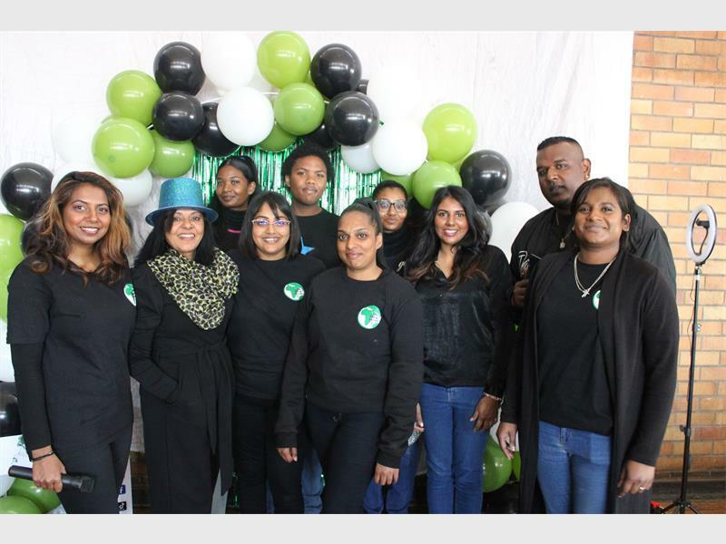
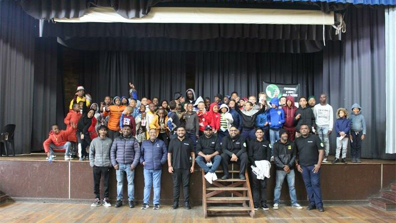

Our Story
Our organization is a community-based NPO, based in the heart of Johannesburg South. We have been making waves of change in communities since our inception in 2021. We have discovered small gaps in our communities and needs. we center our focus and efforts on foundational growth through education, skill development, youth development and basic community welfare.

Vision & Mission
TO EMPOWER disadvantaged communities and individuals through sustainable development and social impact.
TO TRANSFORM lives at grassroots levels
TO SUPPORT and provide essential resources like meals, blankets and educational support to the vulnerable groups like the elderly and the children that can't afford
It is to provide access to quality education, vocational training, and mentorship programmes that equip individuals with the skills and knowledge needed to break free from the cycle of poverty.
